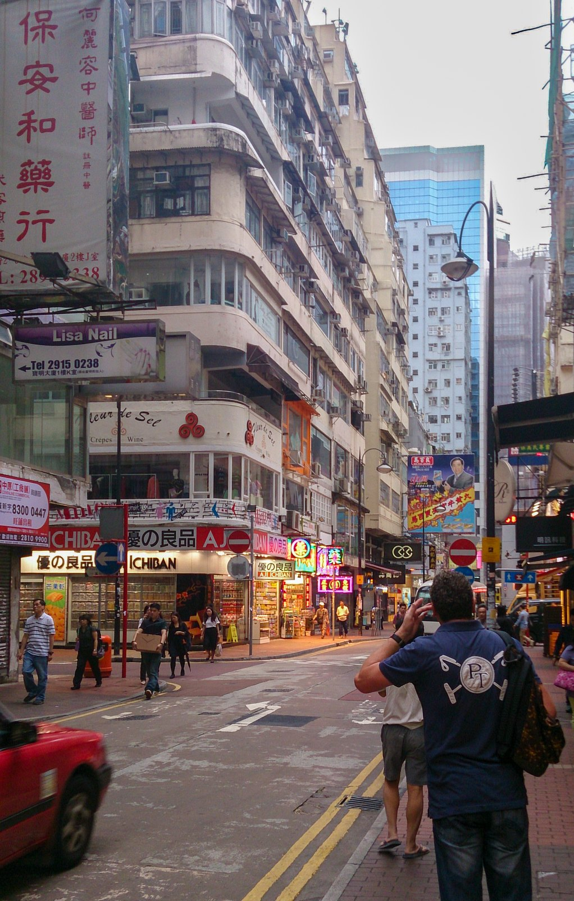
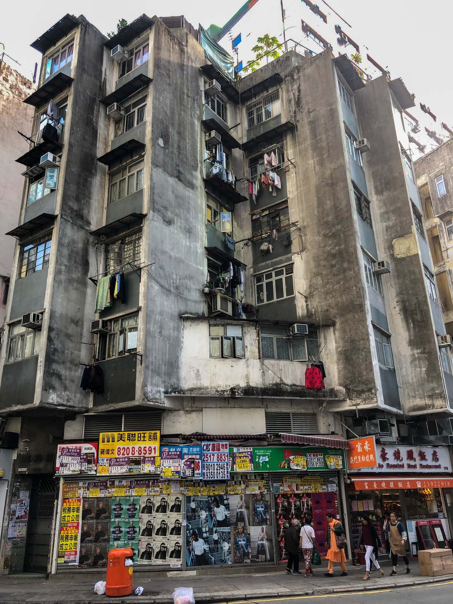
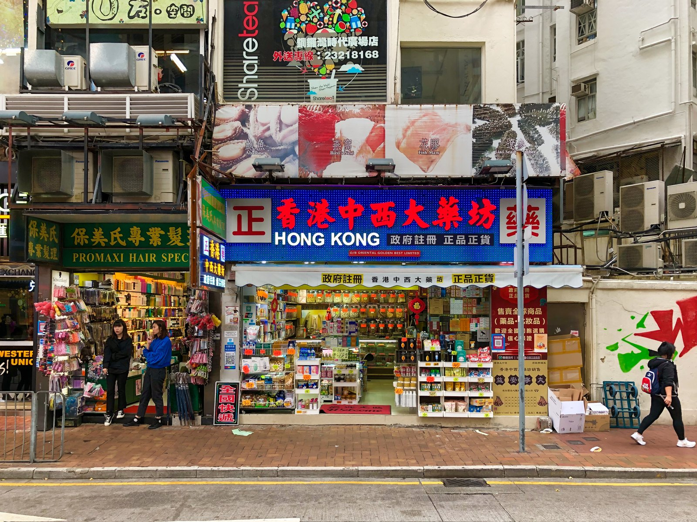
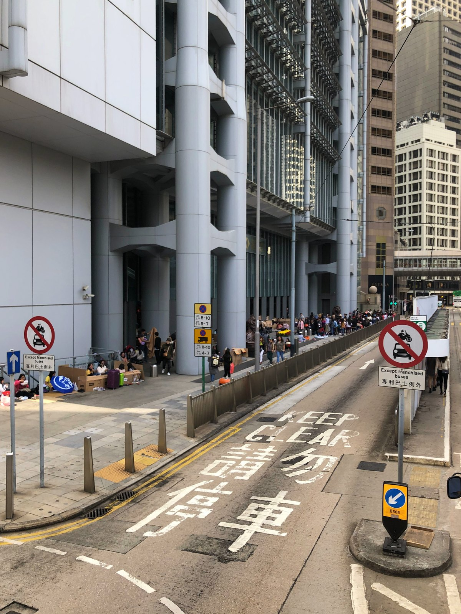
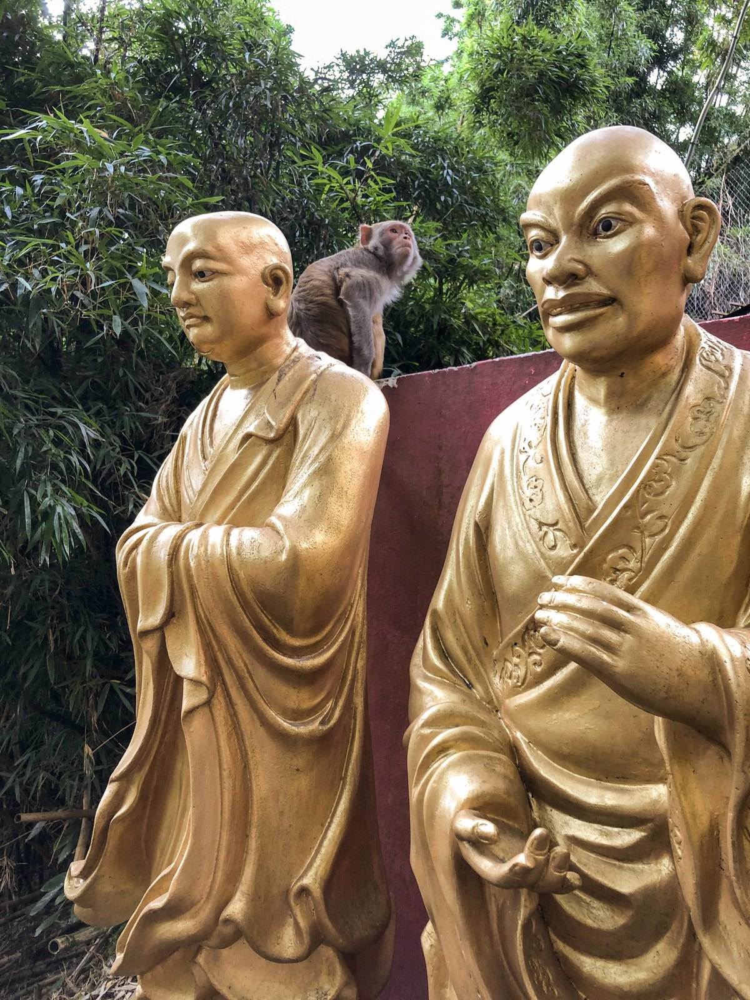
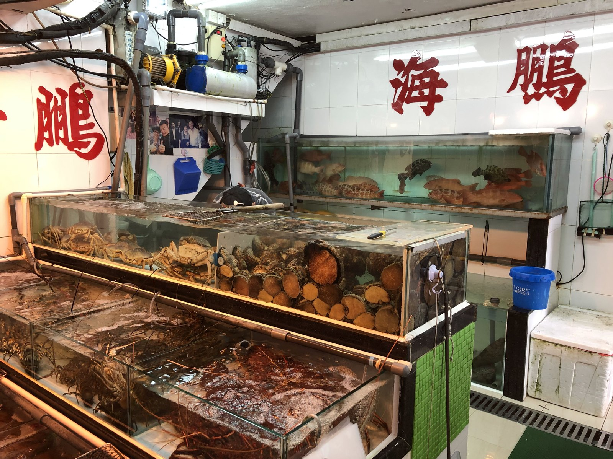
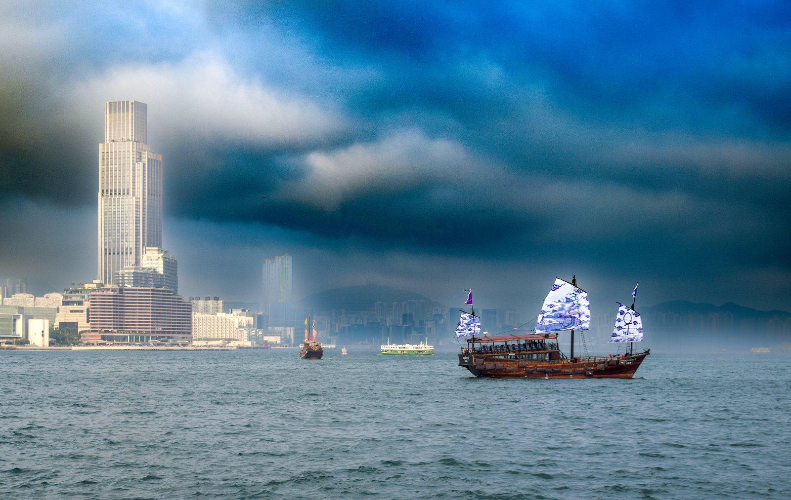

Das vierte Mal Hongkong, das erste Mal zum Frühlingsfest. Das Chinesische Neujahr verwandelt die Metropole in ein einziges buntes Feuerwerk. Ich stehe mittendrin, vor den Chungking Mansions, dem einstigen „Sündenpfuhl" an der Nathan Road in Tsim Sha Tsui, in dem ich vor Jahren mal übernachtet habe. Damals: Abenteuer. Heute: schöne Erinnerungen und die leise Erleichterung, dass mein Rücken das Hostelbett nicht mehr aushalten muss.
Die Parade rollt vorbei. Drachen, Löwen, Trommeln, der Geruch von Pulver und gebratenem Entenfleisch. Die Nathan Road, sonst eine Schlucht aus Neon und Eile, ist heute ein Flussbett aus Menschen. Ich stehe genau da, wo ich damals in einem Zimmer geschlafen habe, das gerade groß genug für einen Koffer war. Meinen, wohlgemerkt. Nicht mich. Jetzt drücken sich Tausende an mir vorbei. Ich bin still. Man gewöhnt sich nicht an Hongkong. Man gewöhnt sich nur daran, überrascht zu werden.
Zwischen Wolkenkratzern und Wasserspiegeln
Wer Hongkong nur von der Avenue of Stars oder dem Peak kennt, kennt die Hülle. Die Stadt lebt in den Widersprüchen: zwischen dem Glanz der Central-Wolkenkratzer und den engen Gassen von Mong Kok, wo Fisch auf dem Bürgersteig trocknet und alte Männer Mahjong spielen, als hätte die Zeit vor vierzig Jahren beschlossen, hier einfach sitzen zu bleiben.


Ein paar Straßen weiter bröckelt die Fassade langsam vom Beton, Wäscheleinen hängen aus jedem zweiten Fenster. Es ist bewohnt, bis unters Dach. Genau dieses alte Hongkong liebe ich. Nicht das mit dem Infinity-Pool. Das mit der Klimaanlage, die schon seit Jahrzehnten am selben Fensterbrett hängt.
In der Foo Ming Street in Causeway Bay steht eines dieser Häuser, die einen einfach anhalten lassen: ein Eckhaus, gebogen wie ein Schiffsbug, mit runden Balkonen, die exakt der Straßenkurve folgen. Corner House nennt man das hier, und die meisten davon stammen aus den 1950er- oder 60er-Jahren, als Hongkong nach dem Krieg im Rekordtempo wachsen musste. Die Bauvorschriften verlangten damals auskragende Balkone für bessere Belüftung in den engen Wohnungen. An Straßenecken wurden diese Balkone einfach der Kurve entlang gezogen. Ergebnis: Architektur aus reinem Pragmatismus, die zufällig aussieht wie Art déco.
Manche sagen, Feng Shui stecke dahinter. Rundungen an Kreuzungen sollen Harmonie bringen, keine scharfen Kanten, die Unglück anziehen. Wirklich belegt ist das nicht, wahrscheinlich ist es von beidem ein bisschen. Solche Eckhäuser standen mal überall, in Wan Chai, in Sham Shui Po, in Mong Kok. Die meisten sind inzwischen abgerissen, ersetzt durch die immer gleichen Glastürme. Was übrig bleibt, verwittert langsam, ohne Denkmalschutz. Genau deshalb bin ich stehen geblieben und hab fotografiert. Nächstes Mal steht da vielleicht schon ein neuer Turm.



Admiralty, sonntags: 300.000 Menschen, ein Zuhause auf Pappe
Sonntags verändert sich Hongkong Island komplett. Rund um Admiralty und Central sitzen dann tausende Filipinas und Filipinos auf ausgebreiteten Kartons, picknicken, singen, spielen Karten. Es ist ihr einziger freier Tag der Woche, seit den frühen 1980er-Jahren Tradition, und die Stadt sperrt dafür extra Straßen. Über 300.000 Hausangestellte arbeiten in Hongkong, die meisten aus den Philippinen und Indonesien. Einmal in der Woche gehört ihnen die teuerste Immobilie der Stadt: der Bürgersteig vor den Bankentürmen.
Ich bin da durchspaziert und war einfach nur still. Diese Menschen bauen sich jeden Sonntag ein Wohnzimmer aus Pappkarton, mitten zwischen Gebäuden, die mehr wert sind als so manches Heimatland. Und lachen dabei mehr als die Banker eine Etage höher.

Zehntausend Buddhas, 431 Stufen, ein Affe
Der Name ist eigentlich Understatement. Im Kloster von Sha Tin stehen offiziell an die 12.800 goldene Buddha-Figuren, jede von Hand gefertigt, keine wie die andere. Zehntausend war wohl einfach die rundere Zahl. Bevor man sie sieht, muss man allerdings hoch: 431 Stufen, steil, gesäumt von noch mehr Buddhas, die einen beim Rauf-Keuchen freundlich anlächeln.
Ich war bei 30 Grad und 80 Prozent Luftfeuchtigkeit unterwegs. Bei Stufe 30 war ich vollkommen fertig. Bei Stufe 431 nur noch eine Pfütze mit Kamera. Die Buddhas blieben gelassen. Sie kennen das schon.
Oben dann Gesellschaft, mit der ich nicht gerechnet hatte: Die Hügel um Sha Tin sind bekanntes Affenrevier, und einer davon hatte sich neben zwei goldene Mönchsstatuen gesetzt, als gehöre er zur Ausstellung dazu. Vielleicht tut er das mittlerweile. Wildes Tier oder zwölftausendundeinste Figur, schwer zu sagen bei dem Blattwerk im Hintergrund.

Die Kunst des Durchkommens
Bevor das Essen auf dem Teller landet, schwimmt es meistens noch. In den Markt-Becken von Kowloon stapeln sich Krebse wie Bauklötze, Fische stehen in drei Aquarien übereinander, und über allem prangt in Rot der Name des Ladens, groß genug, dass ihn niemand übersieht. Auswahl per Kescher, nicht per Speisekarte. Frischer geht in Europa höchstens direkt am Kai.

In Hongkong isst man nicht, um zu verweilen. Man isst, um weiterzukommen. Dim Sum in einem Restaurant, dessen Name nur aus Zahlen besteht. Nudelsuppe im Stehen, weil Stühle offenbar als Zeitverschwendung gelten. Eine Eierwaffel auf die Hand, heiß, knusprig, süß, während man auf die nächste Fähre wartet. Keine Fünf-Gänge-Menüs. Dafür tausend Gerichte, die jeweils fünf Minuten dauern und fünf Dollar kosten. Mein Ernährungsplan hat kapituliert und ist einfach mitgelaufen.
„Hongkong ist die einzige Stadt, in der man um drei Uhr nachts noch ein heißes Essen bekommt. Schneller als anderswo ein Glas Wasser."
Warum ich immer wiederkomme
Vier Mal. Jeder Besuch war anders. Jetzt stehe ich hier, vor den Chungking Mansions, während das Neue Jahr um mich herum explodiert, und liebe diese Stadt: ihre Rhythmen, ihre Pausen, ihre Orte des Stillstands mitten im Sturm.

Und dann gibt es Stanley. Das gelbe Haus am Strand, unübersehbar wie ein Textmarker in einer Schwarz-Weiß-Fotografie. Damals war hier noch das legendäre Restaurant The Boathouse untergebracht, jahrelang eine feste Adresse für Seafood in Stanley, ursprünglich sogar mit blauer statt gelber Fassade, erst später aus Feng-Shui-Gründen umgestrichen. Ich war dort baden, im Februar, im Meer, das für Hongkonger Verhältnisse kühl ist und für einen Franken einfach nur herrlich. Die Sonne brennt. Die Palmen rascheln. Für eine Stunde vergisst man, dass zwanzig Busminuten entfernt eine der dichtesten Städte der Welt pulsiert. Stanley ist Hongkongs Atempause. Ein Strand, ein Markt, ein gelbes Haus wie vom Postkartenmaler bestellt.

Mitten im Dunst vor Kowloon, taucht so ein Relikt auf, eine echte Dschunke mit blau bedruckten Segeln, wie einem Aquarell entkommen, direkt vor der Skyline von Tsim Sha Tsui. Die meisten davon sind heute Touristenboote, umgebaut, poliert, fotogen. Der Anblick bleibt trotzdem großartig.

Hongkong ist keine Stadt zum Verweilen. Sie ist eine Stadt zum Durchatmen, Durchschauen, Durchkommen. Und manchmal, wenn man ganz still steht, an einem Strand oder in einer Menschenmenge an der Nathan Road, dann sieht man sie: die Stille hinter dem Lärm.
Wer zum ersten Mal kommt, sollte unbedingt die Star Ferry nach Kowloon nehmen und sich einfach an den Hafen setzen. Die Skyline übernimmt den Rest, das kann sie. Bis bald. Möge das Jahr glücklich beginnen.